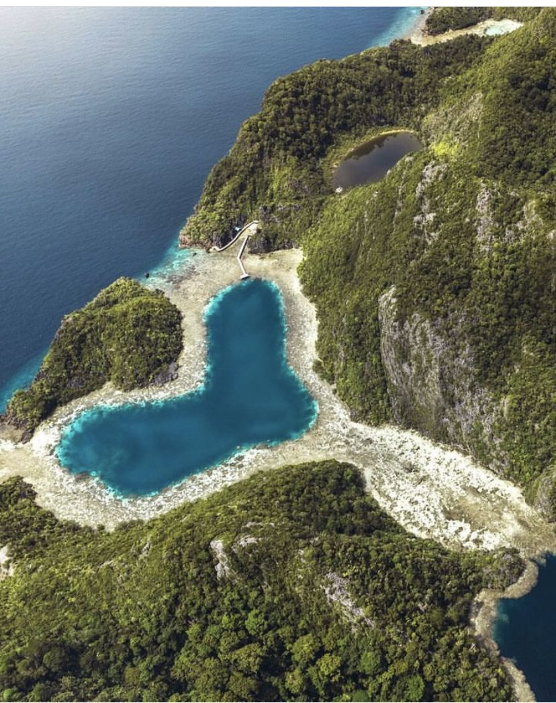
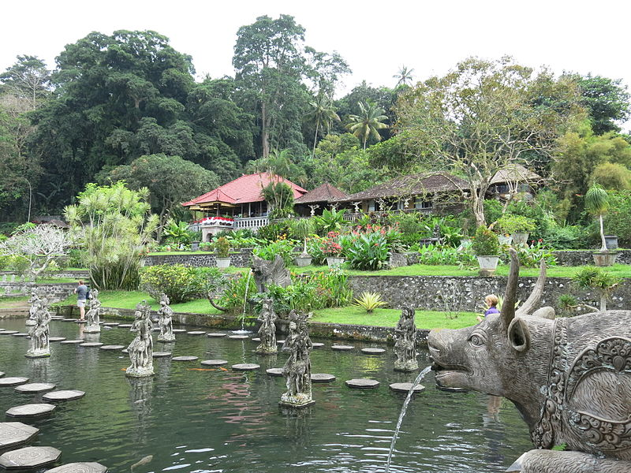
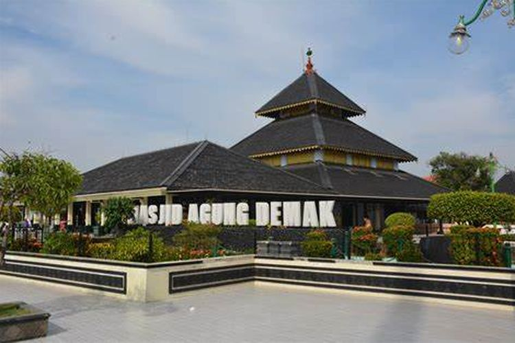

PERTEMUAN VII
DATA MANIPULATION LANGUAGE (Bagian-2)
| Obyek Wisata | ||
|  | Raja Ampat Raja Ampat merupakan salah satu objek wisata Indonesia yang mendunia dan diakui Unesco. Keindahan pemandangan bawah lautnya menjadi daya tarik utama Pulau yang ada di ujung timur Indonesia ini. Selengkapnya.... |
 |
| Istana Tirta Gangga Tirta Gangga dahulunya merupakan taman air milik Kerajaan Karangasem yang dibangun oleh Raja Karangasem, Anak Agung Anglurah Ketut Karangasem Agung pada tahun 1946. Selengkapnya.... |
 | |
| Masjid Agung Demak Masjid Agung Demak adalah masjid tertua di Pulau Jawa. Masjid ini dibangun oleh Raden Patah dan wali songo pada abad ke-15 dan digunakan sebagai tempat berkumpul oleh wali songo. Selengkapnya.... |
 | |
| Flying Fox Pantai Taman Pantai Taman yang berada di Pacitan menyuguhkan permainan flying fox di atas ketinggian sekitar 100 meter, dengan panjang lintasan berkisar 400 meter. Selengkapnya.... |
 |
|
| Kategory Obyek |
|
| Wisata Alam Wisata Alam adalah obyek wisata yang di dalamnya terdapat keindahan dan kekayaan alam di Indonesia. Selengkapnya.... |
|
| Wisata Budaya Wisata Budaya merupakan obyek wisata yang di dalamnya ada peninggalan sejarah dan Budaya pada Indonesia. Selengkapnya.... |
|
| Wisata Religi Wisata Religi merupakan obyek wisata yang berupa tempat ritual keagamaan yang ada pada Indonesia. Selengkapnya.... |
|
| Wisata Minat Khusus Wisata Minat Khusus merupakan obyek wisata yang menyediakan sarana khusus untuk melakukan rekreasi yang ada di Indonesia. Selengkapnya.... |
|
 |
Wisata Pertanian Agrowisata adalah aktivitas wisata yang melibatkan penggunaan lahan pertanian atau fasilitas terkait yang menjadi daya tarik bagi wisatawan. Selengkapnya.... |